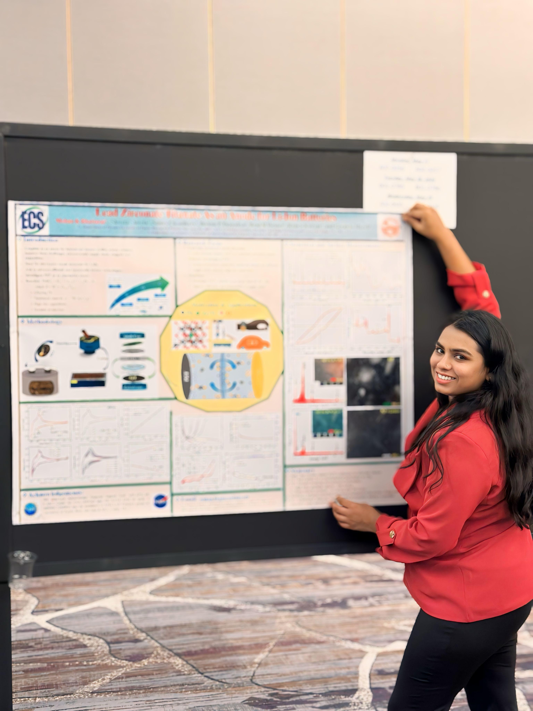

Ph.D. Candidate | Chemical Physics | Battery Safety Researcher
Home

This photograph was taken during my first ECS Conference held in San Francisco, where I had the opportunity to meet inspiring researchers like Prof. Arumugam Manthiram and many other pioneers in the field of battery research.
I am a Ph.D. candidate in Chemical Physics at the University of Puerto Rico, working under the mentorship of Professor Ram S. Katiyar. My research focuses on advancing lithium-ion and lithium-sulfur battery technologies, emphasizing battery safety modeling and the development of advanced electrode materials. Collaborating within Professor Katiyar's Advanced Materials Research Laboratory (SPECLAB), I engage in cutting-edge projects that aim to enhance battery performance and safety.
Strong background in nanomaterials and solid-state synthesis.
Education:
Ph.D. in Chemical Physics - University of Puerto Rico
M.Sc. in Physics - Deenbandhu Chotu Ram University of Science and Technology, India
B.Sc. in Physics - Maharshi Dayanand University, India
Research
Research Interests:
Battery Safety Modeling
Advanced Electrode Materials
Recent Projects:
Development of a novel alloy-based anode material to improve high-rate lithium-ion battery performance and cycle stability. This system is being evaluated for full-cell testing. The work forms part of a pending invention disclosure..
Investigation of lithium-sulfur full-cell architectures including polysulfide management and capacity retention using advanced carbon and ceramic nanomaterials.
Publications
Enhanced Rate Capability in Lithium-Sulfur Batteries Using Hybrid Carbon Nanotubes and NZFO-Coated Separator - Journal of Electroanalytical Chemistry, 2024.
Encapsulation Engineering of Sulfur into Magnesium Oxide for High Energy Density LiS Batteries - Molecules, 2024.
Unveiling Potential of Gallium Ferrite (GaFeO3) as an Anode Material for Lithium-Ion Batteries - ACS Omega, 2024.
Effective Polysulfide Control in Lithium-Sulfur Batteries Utilizing BiFeO3 Nanoparticles - APL Materials, 2024.
Exploring Lead Zirconate Titanate: The Potential Advancement as an Anode for Li-Ion Batteries - ACS Omega, 2024.